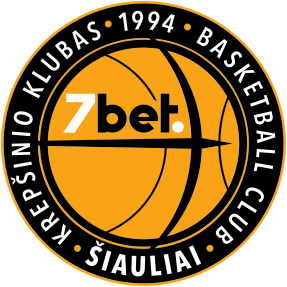

Šiaulių „Šiauliai-7bet“

Įkurta: 1984 m.
Treneris: Antanas Sireika
Komandos sudetis:
- Mantas Litvinas
- Martynas Varnas
- Eimantas Stankevičius
- Ernestas Jonkus
- Arminas Urbutis
- Donatas Sabeckis
- Daniel Baslyk
- Jon Elmore
- Kajus Leliukas
- Giedrius Staniulis
- Nemanja Bezbradica
- Isaiah Armwood
- Paulius Danusevičius
- Jonas Paukštė
Nuoroda i komandos sveitainę čia...